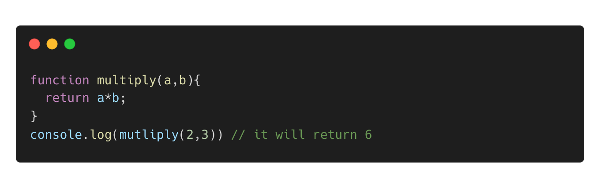

Javascript DOM Blog
An analogy to describe JavaScript and its relationship to HTML and CSS.
JavaScript, HTML and CSS are like different parts of a motorbike. JavaScript is like the engine that makes the motorbike move and do cool things. HTML is like the frame of the motorbike, it gives the motorbike its structure and layout. CSS is like the motorbike’s paint and design, it makes the motorbike look pretty. All three work together to make an awesome motorbike that moves and looks good.
Explain control flow and loops using an example process from everyday life, for example, 'waking up' or 'brushing your teeth' (but not those).
Control flow in JavaScript is the process of controlling the order in which the code is executed, allowing for specific instructions to be executed only under certain conditions. Loops, on the other hand, are used to repeatedly execute a block of code for a specified number of times or until a certain condition is met. This is an efficient way to perform repetitive tasks and can greatly reduce the amount of code needed to perform these tasks.
An example of control flow in everyday life could be the process of preparing a meal, where certain steps must be followed in a specific order and certain ingredients must be present before proceeding. Loops can be compared to a repetitive task such as taking shower every morning, where the same actions are performed multiple times.
Describe what the DOM is and an example of how you might interact with it.
The DOM (Document Object Mode) is a programming interface specifically for HTML or XML documents, which represents the structure of a document as a tree of nodes, with each node representing a part of the document, such as an element, attribute, or text content.
An example of interacting with the DOM is using JavaScript to change the content of an HTML element.
For example, I typed the following HTML:
I could use JavaScript to change the text content of the element to "Hello DOM":
This would change the text content of the (p) element with an id of "greeting" to "Hello DOM" on the webpage where this script is executed.
Explain the difference between accessing data from arrays and objects.
Arrays and objects are both used to store collections of data in JavaScript. The main difference is how you access the data stored in them.
Arrays are like a list of items, where each item has a number (called an index) that tells you where it is in the list. For example, if you have an array of colors, the first color would have an index of 0, the second color would have an index of 1, and so on. To get an item from an array, you use the index number in square brackets.
Objects are like a collection of key-value pairs, where each key is a string that you use to find the corresponding value. For example, if you have an object that represents a person, you might have keys for the person's name, age, and occupation, with the values being the actual name, age, and occupation of the person. To get a value from an object, you use the key in dot notation.
Here's the examples to show the difference:
In the first example, we have an array of vege and we are accessing the first element of the array (which is “tomato”) by using its index number (which is 0) in square brackets. On the other hand, the second example, we have an object that represents a person and we are accessing the name of that person by using the key "name" in dot notation.
Explain what functions are and why they are helpful.
A function in JavaScript is a block of code that can be reused multiple times to perform a specific task. Functions are defined using the function keyword and can take input in the form of arguments and can return a value to the calling code. Functions make the code more organized, easy to maintain and reusable.
Here's the example:
